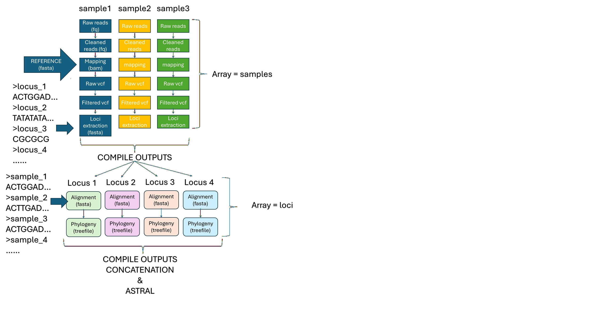
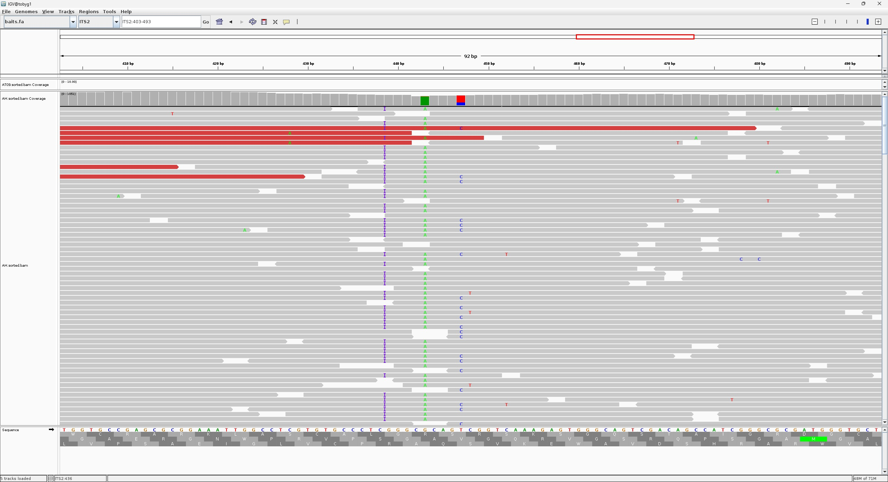
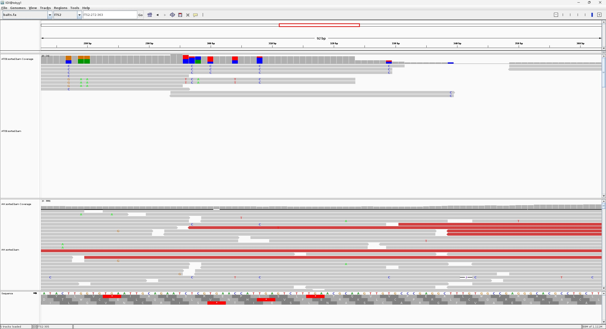

🔬 Target Capture Data Processing: A Modular Bash Pipeline
Objective: This workshop provides a structured, production-ready pipeline for processing target capture sequencing data. From raw FASTQ files to consensus sequences and phylogenies, each step is compartmentalized into functions for clarity, reproducibility, and scalability on HPC clusters.
⚙️ System Requirements: This pipeline is designed for a SLURM-based HPC environment. It assumes access to conda, wget, and the bioinformatics tools installed in the target_capture environment.
Before Iain is mad at us, let's request a specific amount of resources for our job:
srun --partition=short --cpus-per-task=8 --mem=8G --pty bash
This ensures we have enough CPU and memory to run the pipeline efficiently without overloading the cluster.
📁 Pipeline Architecture & Compartmentalization
The pipeline is built as a series of independent Bash functions. This modular design allows you to run specific steps without re-running the entire workflow. Each function has a clear input/output interface, making the code easy to debug and maintain.
The entire workflow... if things are going good

how the pipeline works
🧪 Core Functions: Parameter Deep Dive
We will focus on the fastp_qc function, which performs read trimming and quality control. The parameters are chosen to reflect modern industry standards for Illumina data, specifically optimized for target capture libraries.
1. Environment & Data Preparation
#!/bin/bash
#SBATCH --job-name=target_array
#SBATCH --array=1
#SBATCH --cpus-per-task=4
#SBATCH --mem=4G
#SBATCH --output=slurm-%A_%a.out
function setup_conda {
conda create --name target_capture
conda install --name target_capture -y fastp bwa samtools bcftools iqtree seqkit blast
}
function download_ena {
OUTDIR=$1
wget -nc -P $OUTDIR ftp://ftp.sra.ebi.ac.uk/vol1/fastq/ERR776/ERR776786/ERR776786_1.fastq.gz
wget -nc -P $OUTDIR ftp://ftp.sra.ebi.ac.uk/vol1/fastq/ERR776/ERR776786/ERR776786_2.fastq.gz
wget -nc -P $OUTDIR ftp://ftp.sra.ebi.ac.uk/vol1/fastq/ERR776/ERR776790/ERR776790_1.fastq.gz
wget -nc -P $OUTDIR ftp://ftp.sra.ebi.ac.uk/vol1/fastq/ERR776/ERR776790/ERR776790_2.fastq.gz
}
💡 Key Point: The --array=1 directive sets up a SLURM job array. This allows you to process multiple samples in parallel. The -nc flag in wget prevents re-downloading existing files.
2. Read Trimming & QC: fastp_qc
This function replaces legacy tools like Trimmomatic. The parameters below are selected for a balance between stringency and data retention, crucial for target capture where reads are short.
function fastp_qc {
INDIR=$1
OUTDIR=$2
SAMPLE=$3
fastp -i ${INDIR}/${SAMPLE}_1.fastq.gz -I ${INDIR}/${SAMPLE}_2.fastq.gz \
-o ${OUTDIR}/${SAMPLE}_R1.fq.gz -O ${OUTDIR}/${SAMPLE}_R2.fq.gz \
--unpaired1 ${OUTDIR}/${SAMPLE}_unpaired1.fq.gz \
--unpaired2 ${OUTDIR}/${SAMPLE}_unpaired2.fq.gz \
-h ${OUTDIR}/${SAMPLE}.html \
--json ${OUTDIR}/${SAMPLE}.json \
--detect_adapter_for_pe \
--qualified_quality_phred 20 \
--unqualified_percent_limit 40 \
-c \
--cut_front \
--cut_front_mean_quality 20 \
--cut_tail \
--cut_tail_mean_quality 20 \
--cut_right \
--cut_right_window_size 4 \
--cut_right_mean_quality 20 \
--length_required 36 \
--trim_poly_g \
--thread 8 \
> ${OUTDIR}/${SAMPLE}.fastp.log
}
📊 Parameter Justification Table
| fastp Parameter |
Value |
Trimmomatic Equivalent |
Rationale for Target Capture |
--detect_adapter_for_pe |
N/A |
ILLUMINACLIP |
Automatically detects and trims common Illumina adapter sequences. Simpler than providing an explicit FASTA file. |
--qualified_quality_phred |
20 |
Part of SLIDINGWINDOW |
Sets a base quality threshold of Q20 (99% accuracy). Bases below this are considered low quality. |
--unqualified_percent_limit |
40 |
Part of SLIDINGWINDOW |
Allows up to 40% of bases in a read to be low-quality before discarding. This is permissive, preserving short target fragments. |
-c (--correction) |
N/A |
None |
Performs base correction in overlapping regions of paired-end reads, reducing sequencing errors. |
--cut_front/--cut_tail |
Mean Q 20 |
LEADING:3 / TRAILING:3 |
Modern Upgrade: Trims low-quality bases (Q<20) from the 5' and 3' ends. The old Q3 threshold is obsolete for modern data. |
--cut_right |
Window:4, Mean Q:20 |
SLIDINGWINDOW:4:15 |
Modern Upgrade: Uses a 4bp sliding window from the 5' end. If the mean quality drops below Q20, the read is truncated. The quality threshold is raised from 15 to 20 for higher confidence. |
--length_required |
36 |
MINLEN:36 |
Discards any read shorter than 36bp after trimming. This is a safe minimum for reliable mapping. |
--trim_poly_g |
N/A |
None |
Essential for NovaSeq data. Removes poly-G tails caused by two-color chemistry, which appear as high-quality Gs but are artifacts. |
🔬 Why Q20 instead of Q3 or Q15?
- Q3 (from old Trimmomatic tutorials) is essentially no trimming. Modern Illumina reads rarely have bases below Q3.
- Q15 (99.97% accuracy) is a common legacy threshold.
- Q20 (99% accuracy) is the current best practice. It removes genuinely poor-quality bases while retaining the high-quality data typical of modern sequencers. This is especially important for variant calling downstream.
🔬 Another good thing about using a script
you can easily turn your script to paper-styled method section with the help of AI.
All you need to do is to copy and paste the script into an AI assistant like ChatGPT or Claude.
Raw sequencing reads were subjected to comprehensive quality control using fastp (v0.23.4) with the following parameters.
Adapter sequences were automatically detected and removed for paired-end reads (--detect_adapter_for_pe).
Reads were filtered based on a minimum Phred score of 20 (--qualified_quality_phred 20),
with a maximum allowance of 40% unqualified bases per read (--unqualified_percent_limit 40).
A multi-pass trimming strategy was employed to ensure high base quality across read lengths.
Bases at the front and tail ends were trimmed if the mean quality fell below 20 (--cut_front, --cut_tail, --cut_front_mean_quality 20).
A sliding window scan from the 5' to 3' end trimmed regions where the mean quality in a 4-base window dropped below 20
(--cut_right, --cut_right_window_size 4, --cut_right_mean_quality 20).
Poly-G tails were removed (--trim_poly_g).
Reads shorter than 36 bases after trimming were discarded (--length_required 36).
Base correction in overlapped regions of paired-end reads was enabled (-c) to improve consensus accuracy.
3. Mapping: bwa_map vs bowtie2_map
We had an update for the cleaning up step. for the capture steps, there are more ready-to-use pipelines and tools, such as Captus, EASY353, and HybPiper.
But it is still good to know the underlying logics, which also gives you more flexibility to customize your pipeline.
Besides, bam files and vcf files are common formats for storing mapping and variant calling results, which are also widely used in other types of sequencing data.
So it is good to know how to generate them from raw data, i.e. via mapping and variant calling.
Both functions are provided, but BWA-MEM is recommended for its sensitivity with indels and its status as the standard for variant calling.
function bwa_map {
INDIR=$1; REF=$2; OUTDIR=$3; SAMPLE=$4
minQ=10
bwa mem $REF ${INDIR}/${SAMPLE}_R1.fq.gz ${INDIR}/${SAMPLE}_R2.fq.gz -t 8 -k 20 |\
samtools view -Sbh -F 4 -@ 8 -o $OUTDIR/${SAMPLE}.all.bam
samtools view $OUTDIR/${SAMPLE}.all.bam -Sbh -F 4 -f 3 -q $minQ -@ 8 |\
samtools sort -@ 8 -o $OUTDIR/${SAMPLE}.sorted.bam
samtools index $OUTDIR/${SAMPLE}.sorted.bam
}
🧬 Parameter Notes:
-k 20: Minimum seed length. A lower value (default is 19) increases sensitivity for short target capture reads.-q $minQ (set to 10): Filters out low-quality alignments after mapping. Q10 is a lenient threshold to keep more data; you can increase this (e.g., Q20) for more stringent analysis.-f 3: Keeps only reads that are properly paired (0x3 flag).
Target Capture Data Processing Pipeline
SNP Calling and Filtering Pipeline
This section details the variant calling and filtering process using bcftools. The pipeline is implemented as a bash function that processes a single sample at a time, applying multiple quality filters to ensure high-confidence SNP calls.
🔍 Key Concept: The pipeline uses a series of piped commands, each applying a specific filter or transformation. This modular approach allows for easy modification and understanding of each filtering step.
The SNP Calling Function
function snp_calling {
INDIR=$1
OUTDIR=$2
REF=$3
SAMPLE=$4
#FILTERING
minQ=20
minDP=10
MIN_MINOR_ALLELE_FREQ=0.01
MIN_MAPPING_QUALITY=30
echo 'calling SNPs'
bcftools mpileup -Ou -f $REF $INDIR/${SAMPLE}.sorted.bam --threads 8 \
--annotate INFO/AD,FORMAT/DP,FORMAT/AD \
| bcftools call -Ou -mv \
| bcftools +fill-tags -- -t AC,AN,AF,MAF,HWE,ExcHet \
| bcftools view -Oz > ${OUTDIR}/${SAMPLE}.raw.vcf.gz
#OPTIONAL FILTERS
bcftools view ${OUTDIR}/${SAMPLE}.raw.vcf.gz -O u 2>/dev/null \
| bcftools view --types snps \
| bcftools view -m2 -M2 \
| bcftools filter -e "QUAL<${minQ} || INFO/DP<${minDP}" \
| bcftools filter -e "INFO/MAF[0] < ${MIN_MINOR_ALLELE_FREQ}" \
| bcftools filter -e "INFO/MQ < ${MIN_MAPPING_QUALITY}" -Oz -o $OUTDIR/${SAMPLE}.flt3.vcf.gz
echo "Indexing filtered VCF..."
bcftools index $OUTDIR/${SAMPLE}.flt3.vcf.gz -f
}
Pipeline Steps Explained
Step 1: mpileup - Generating Raw Variant Calls
moving from mapping to variant calling

from mapping to SNPs: a visual validation
bcftools mpileup -Ou -f $REF $INDIR/${SAMPLE}.sorted.bam --threads 8 --annotate INFO/AD,FORMAT/DP,FORMAT/AD
- -Ou: Output in uncompressed BCF format (faster piping)
- -f $REF: Reference genome in FASTA format
- --threads 8: Use 8 CPU threads for parallel processing
- --annotate: Add additional information fields:
INFO/AD: Allelic depth at variant sitesFORMAT/DP: Per-sample read depthFORMAT/AD: Per-sample allelic depth
Step 2: call - Initial Variant Calling
bcftools call -Ou -mv
- -mv: Multiallelic variant calling mode
- -Ou: Continue with uncompressed output for piping
- What it does: Identifies variant sites from the mpileup output using a Bayesian model
Step 3: fill-tags - Calculate Population Genetics Statistics
bcftools +fill-tags -- -t AC,AN,AF,MAF,HWE,ExcHet
- +fill-tags: A bcftools plugin that calculates various statistics
- -t AC,AN,AF,MAF,HWE,ExcHet: Tags to calculate:
AC: Allele countAN: Total number of allelesAF: Allele frequencyMAF: Minor allele frequencyHWE: Hardy-Weinberg equilibrium p-valueExcHet: Excess heterozygosity
Step 4: Save Raw Variants
bcftools view -Oz > ${OUTDIR}/${PREFIX}.raw.vcf.gz
- -Oz: Output compressed VCF format
- > ${OUTDIR}/${PREFIX}.raw.vcf.gz: Save raw unfiltered variants to file
Step 5: Load Raw Variants for Filtering
bcftools view ${OUTDIR}/${PREFIX}.raw.vcf.gz -O u 2>/dev/null
- Read raw VCF: Load the previously saved raw variants
- -O u: Output uncompressed BCF for efficient piping
- 2>/dev/null: Suppress warning messages
Step 6: SNP Type Filters
bcftools view --types snps | bcftools view -m2 -M2
- --types snps: Keep only SNP variants (exclude indels)
- -m2 -M2: Keep only biallelic variants (exactly 2 alleles)
- Why: Focuses analysis on simple biallelic SNPs, which are easier to analyze and interpret
Step 7: Quality and Depth Filter
bcftools filter -e "QUAL<${minQ} || INFO/DP<${minDP}"
- QUAL < ${minQ}: Remove variants with quality score below 20
- INFO/DP < ${minDP}: Remove variants with total depth below 10 reads
- Why: Low quality or low depth variants are more likely to be sequencing errors
- These parameters need to be adjusted to the sequencing platform and coverage depth of your dataset
Step 8: Minor Allele Frequency Filter
bcftools filter -e "INFO/MAF[0] < ${MIN_MINOR_ALLELE_FREQ}"
- MAF[0] < 0.01: Remove variants with minor allele frequency below 1%
- Note: The
[0] indexes the first alternate allele
- Using variable: Threshold controlled by
MIN_MINOR_ALLELE_FREQ=0.01 for easy adjustment
- This filter is particularly useful for multi-sample SNP calling to ignore sample-specific SNPs
Step 9: Mapping Quality Filter
bcftools filter -e "INFO/MQ < ${MIN_MAPPING_QUALITY}" -Oz -o $OUTDIR/${SAMPLE}.flt3.vcf.gz
- MQ < 30: Remove variants with mean mapping quality below 30
- Using variable: Threshold controlled by
MIN_MAPPING_QUALITY=30 for easy adjustment
- Why: Low mapping quality suggests reads may map to multiple locations (repetitive regions)
- -Oz: Output compressed VCF format
- -o: Output file path with version suffix .flt3.vcf.gz
📊 Summary of Filtering Parameters
| Filter |
Threshold (Variable) |
Purpose |
| Quality (QUAL) |
≥ 20 (minQ) |
Ensure high confidence in variant call |
| Depth (DP) |
≥ 10 (minDP) |
Sufficient read coverage for reliable calling |
| Minor Allele Frequency (MAF) |
≥ 0.01 (MIN_MINOR_ALLELE_FREQ) |
Remove extremely rare variants (potential errors) |
| Mapping Quality (MQ) |
≥ 30 (MIN_MAPPING_QUALITY) |
Ensure reads map uniquely to the genome |
💡 Pipeline Design Improvements
- Separate raw output: Raw variants are saved before filtering, allowing reprocessing with different parameters
- Configurable thresholds: All filters use variables at the top of the function for easy adjustment
- Progressive filtering: Each filter removes problematic variants, building confidence step by step
- Reusable function: The function can be called for multiple samples, ensuring consistent processing
- Modular filtering: Optional filters can be easily modified or removed based on project needs
⚠️ Important Notes for Target Capture Data
- Depth considerations: Target capture can have variable depth across regions. Consider adjusting
minDP based on your capture efficiency.
- MAF thresholds: With small sample sizes, rare variants might be genuine. Adjust
MIN_MINOR_ALLELE_FREQ based on your research questions.
- Single-sample calling: This pipeline calls variants per sample. For population studies, consider joint calling across all samples simultaneously.
Alternative: Multi-sample Calling
The commented line in the function shows how to adapt this for multiple samples:
# Create a list of BAM files for multi-sample calling
ls $INDIR/*sorted.bam > bamlist.txt
# Multi-sample calling using --bam-list
bcftools mpileup -Ou -f $REF --bam-list bamlist.txt --threads 8 \
--annotate INFO/AD,FORMAT/DP,FORMAT/AD \
| bcftools call -Ou -mv \
| [rest of filtering steps]
Consensus Sequence Extraction Pipeline
This section details the process of extracting consensus sequences from variant calls. The pipeline generates a sample-specific consensus genome by integrating information from the reference genome, variant calls, and sequencing depth information.
🎯 Key Concept: Consensus sequences represent the most likely sequence for each sample, incorporating called variants while masking regions where we lack confidence due to low coverage.
The Consensus Extraction Function
function extract_consensus {
BAMINDIR=$1
VCFINDIR=$2
OUTDIR=$3
REF=$4
SAMPLE=$5
echo "EXTRACT CONSENSUS SEQUENCE FROM $REF REF AND $SAMPLE"
MIN_COVERAGE=2
BAM_FILE=$BAMINDIR/${SAMPLE}.sorted.bam
mkdir ${OUTDIR}/${SAMPLE}
for HEADING in $(grep '>' $REF)
do
CHRM=${HEADING/>/}
echo "Processing $CHRM ..."
# Create temporary directory
mkdir ${OUTDIR}/${CHRM}_${SAMPLE}_tmp
# Mark low coverage areas
samtools depth -a -r $CHRM $BAM_FILE | \
awk -v min="$MIN_COVERAGE" '$3 < min {print $1"\t"$2-1"\t"$2}' > \
${OUTDIR}/${CHRM}_${SAMPLE}_tmp/low_coverage.bed
# Generate consensus for this sample
samtools faidx $REF $CHRM | \
bcftools consensus -s ${SAMPLE} $VCFINDIR/${SAMPLE}.flt3.vcf.gz \
-I \
--mask ${OUTDIR}/${CHRM}_${SAMPLE}_tmp/low_coverage.bed \
-o ${OUTDIR}/${CHRM}_${SAMPLE}_tmp/${SAMPLE}.fasta
# Add sample name to header
sed -i "1s/^>.*/>${SAMPLE}/" ${OUTDIR}/${CHRM}_${SAMPLE}_tmp/${SAMPLE}.fasta
# Collect results
cp ${OUTDIR}/${CHRM}_${SAMPLE}_tmp/${SAMPLE}.fasta ${OUTDIR}/${SAMPLE}/${CHRM}.fasta
# Clean up temporary files
rm -rf ${OUTDIR}/${CHRM}_${SAMPLE}_tmp
done
}
Pipeline Steps Explained
Step 1: Setup and Directory Structure
mkdir ${OUTDIR}/${SAMPLE}
- Purpose: Creates a sample-specific output directory
- Organization: Each sample gets its own folder containing consensus sequences for all chromosomes/contigs
Step 2: Iterate Over Reference Sequences
for HEADING in $(grep '>' $REF)
- Function: Extracts all sequence headers from the reference FASTA
- CHRM=${HEADING/>/}: Removes the '>' character to get clean chromosome/contig names
- Why: Processes each chromosome/contig independently to manage memory and enable parallel processing
Step 3: Temporary Directory Creation
mkdir ${OUTDIR}/${CHRM}_${SAMPLE}_tmp
- Purpose: Creates chromosome-specific temporary directories
- Why unique directories: Prevents file conflicts when processing multiple chromosomes simultaneously
- Note: Each chromosome gets its own temp space for intermediate files
Step 4: Identify Low Coverage Regions

low coverage regions would have been treated as 'as as reference' just like the rest of the regions without SNPs. hence we need to mask them to indicate the lack of information
samtools depth -a -r $CHRM $BAM_FILE | awk -v min="$MIN_COVERAGE" '$3 < min {print $1"\t"$2-1"\t"$2}' > low_coverage.bed
- samtools depth -a: Calculates depth at every position (-a includes zero-depth positions)
- -r $CHRM: Restricts analysis to current chromosome
- awk filter: Identifies positions where depth < MIN_COVERAGE (set to 2)
- BED format: Outputs regions as 0-based intervals:
chromosome start end
- Why $2-1: Converts 1-based positions to 0-based BED format
📊 Example of low_coverage.bed
ENA|OZ297169|OZ297169.1 99 100
ENA|OZ297169|OZ297169.1 145 146
ENA|OZ297169|OZ297169.1 146 147
Each line represents a single base position with <2x coverage that will be masked.
Step 5: Generate Consensus Sequence
samtools faidx $REF $CHRM | bcftools consensus -s ${SAMPLE} $VCFINDIR/${SAMPLE}.flt3.vcf.gz -I --mask low_coverage.bed -o ${SAMPLE}.fasta
Part A: Extract Reference Sequence
samtools faidx $REF $CHRM
- faidx: Indexed FASTA access - extracts specific chromosome sequence
- Output: FASTA format sequence for the current chromosome
Part B: Apply Variants and Masks
bcftools consensus -s ${SAMPLE} $VCFINDIR/${SAMPLE}.flt3.vcf.gz -I --mask low_coverage.bed
- -s ${SAMPLE}: Specifies which sample to use from the VCF
- -I: output variants in the form of IUPAC ambiguity codes
- --mask low_coverage.bed: Replace regions in BED file with 'N' (ambiguous bases)
- What it does:
- Starts with reference sequence
- Applies all variant calls for this sample
- Masks low coverage regions with 'N'
- Outputs final consensus sequence
Step 6: Update FASTA Header
sed -i "1s/^>.*/>${SAMPLE}/" ${OUTDIR}/${CHRM}_${SAMPLE}_tmp/${SAMPLE}.fasta
- sed -i: Edit file in-place
- 1s/^>.*/>${SAMPLE}/: Replace the first line's header with sample name
- Why: Original header contains reference chromosome name; we want sample name for downstream analysis
Before: >ENA|OZ297169|OZ297169.1
After: >potamogeton_95
Step 7: Collect Results and Clean Up
cp ${SAMPLE}.fasta ${OUTDIR}/${SAMPLE}/${CHRM}.fasta
rm -rf ${OUTDIR}/${CHRM}_${SAMPLE}_tmp
- cp: Copies final consensus to sample-specific output directory
- rm -rf: Removes temporary files to save space
- Result: Clean directory structure with per-chromosome consensus files
Final Output Structure
${OUTDIR}/
├── ${SAMPLE}/
│ ├── ENA|OZ297169|OZ297169.1.fasta
│ ├── ENA|OZ297170|OZ297170.1.fasta
│ ├── ENA|OZ297171|OZ297171.1.fasta
│ └── ...
└── [temporary directories removed]
📊 Summary of Parameters
| Parameter |
Value |
Purpose |
| MIN_COVERAGE |
2 |
Minimum depth required to call a base; positions below this become 'N' |
| -I (consensus) |
Flag |
Ignore missing genotypes - treat uncalled sites as reference |
| --mask |
BED file |
Regions to mask with 'N' (low confidence areas) |
💡 Key Considerations for Consensus Generation
- Coverage threshold: MIN_COVERAGE=2 is minimal; consider increasing to 3-5 for higher confidence
- Memory management: Processing per-chromosome prevents memory issues with large genomes
- Missing data: Low coverage regions become 'N's - track these for downstream analyses
- Heterozygosity: This method is susceptible to paralogs and will create chimera. That's why it's better to pull the reads (similar to mapping stage, or blast) and do de novo assembly.
This is exactly what hybpiper, easy353, or captus does.
Multiple Sequence Alignment and Phylogenetic Inference
This section details the process of generating multiple sequence alignments and inferring phylogenetic trees for each gene captured in your target enrichment experiment. Unlike previous steps that operated on a sample basis (array for samples), these steps are parallelized by gene using SLURM array jobs.
🧬 Key Concept: Instead of processing one sample at a time, we now process one gene at a time, collecting sequences for that gene from all samples. This gene-centric approach is ideal for downstream phylogenomic studies where we want to understand the evolutionary history of each locus.
Gene Array Selection
Before running the alignment and phylogeny functions, we need to select which gene to process in the current SLURM array task. Genes are selected from the same reference file (bait set) we used for mapping and SNP calling:
# Get the Nth gene from the bait set FASTA file
GENE=$(grep '>' $BAITS | sed -n "${SLURM_ARRAY_TASK_ID}p" | cut -d '>' -f 2)
Gene Selection Explained
- grep '>' $BAITS: Extracts all header lines (containing '>') from the bait FASTA file
- sed -n "${SLURM_ARRAY_TASK_ID}p": Selects only the line corresponding to the current array task ID
- cut -d '>' -f 2: Removes the '>' character to get clean gene names
- Result: Each array task processes a different gene, enabling massive parallelization
Example: If BAITS contains:
>gene_001
ATCG...
>gene_002
ATCG...
For SLURM_ARRAY_TASK_ID=1, GENE="gene_001"
Alignment Function
function easy353_mafft {
INDIR=$1
OUTDIR=$2
GENE=$3
echo "Compiling and aligning ${GENE}"
# Collect sequences for this gene from all samples
cat $INDIR/*/${GENE}.fasta > ${OUTDIR}/tmp_${GENE}.fasta
# Run MAFFT alignment
mafft --maxiterate 10000 $OUTDIR/tmp_${GENE}.fasta > $OUTDIR/${GENE}.fasta
# Clean up temporary file
rm -f $OUTDIR/tmp_${GENE}.fasta
# Remove any spaces that might cause trouble later
sed -i 's/ //g' $OUTDIR/${GENE}.fasta
}
Step 1: Sequence Compilation
cat $INDIR/*/${GENE}.fasta > ${OUTDIR}/tmp_${GENE}.fasta
- Purpose: Collects the consensus sequence for this gene from every sample
- Directory structure: Assumes each sample has its own subdirectory with per-gene FASTA files
- Example: If INDIR contains
sample1/gene_001.fasta, sample2/gene_001.fasta, etc., they are concatenated into a single multi-FASTA file
Before compilation:
sample1/gene_001.fasta: >sample1\nATCG...
sample2/gene_001.fasta: >sample2\nATCG...
After compilation (tmp_gene_001.fasta):
>sample1
ATCG...
>sample2
ATCG...
Step 2: Multiple Sequence Alignment with MAFFT
mafft --maxiterate 10000 $OUTDIR/tmp_${GENE}.fasta > $OUTDIR/${GENE}.fasta
- mafft: Multiple Alignment using Fast Fourier Transform - one of the most accurate and efficient alignment programs
- --maxiterate 10000: Sets maximum number of iterative refinement cycles
- Higher values = more accurate but slower
- 10000 is very conservative, ensuring convergence
- For closely related sequences, lower values (100-1000) may suffice
- Why MAFFT: Excellent balance of speed and accuracy for nucleotide sequences
- Output: Aligned multi-FASTA file with gaps (-) inserted to maintain homology
Step 3: Cleanup and Formatting
sed -i 's/ //g' $OUTDIR/${GENE}.fasta
- sed -i 's/ //g': Removes all spaces from the file (in-place editing)
- Why: Some downstream tools (including IQ-TREE) can choke on unexpected whitespace in FASTA files
- Safety measure: Ensures clean input for phylogenetic inference
📊 MAFFT Parameters Summary
| Parameter |
Value |
Effect |
| --maxiterate |
10000 |
High accuracy, suitable for divergent sequences or when alignment uncertainty is high |
| Default algorithm |
FFT-NS-i |
Progressive method with iterative refinement (auto-selected with --maxiterate) |
Phylogenetic Inference Function
function iqtree_per_gene {
INDIR=$1
OUTDIR=$2
GENE=$3
mkdir $OUTDIR/$GENE
cp $INDIR/${GENE}.fasta $OUTDIR/$GENE
iqtree -s $OUTDIR/$GENE/${GENE}.fasta \
-bb 1000 \
-redo \
-safe
mv $OUTDIR/$GENE/*treefile $OUTDIR
rm -rf $OUTDIR/$GENE
}
Step 1: Setup Gene-Specific Directory
mkdir $OUTDIR/$GENE
cp $INDIR/${GENE}.fasta $OUTDIR/$GENE
- Purpose: Creates an isolated working directory for each gene
- Why: IQ-TREE generates multiple output files; this prevents cross-gene contamination
- Clean approach: Each gene runs in its own sandbox
Step 2: IQ-TREE Phylogenetic Inference
iqtree -s $OUTDIR/$GENE/${GENE}.fasta -bb 1000 -redo -safe
Parameter Breakdown:
- -s: Input alignment file
- -bb 1000: Ultrafast bootstrap with 1000 replicates
- Assesses branch support by resampling alignment sites
- 1000 replicates provides stable support values
- Values closer to 100% indicate strong support
- -redo: Overwrites previous output files if they exist
- -safe: Safe mode - handles problematic taxon names (e.g., special characters)
🔍 IQ-TREE automatically:
- Selects the best-fit substitution model using ModelFinder
- Performs tree search to find the maximum likelihood tree
- Calculates branch support via ultrafast bootstrap
- Writes multiple output files with results and statistics
Step 3: Collect Results and Clean Up
mv $OUTDIR/$GENE/*treefile $OUTDIR
rm -rf $OUTDIR/$GENE
- mv *treefile: Moves only the tree file to the main output directory
- Tree file format: Newick format containing the phylogenetic tree
- rm -rf: Removes the gene-specific working directory and all intermediate files
- Result: Clean output with just the essential tree files for each gene
Integration in Main Pipeline
# STEP 5: ALIGNMENT - GENE ARRAY
easy353_mafft $RESULT4 $RESULT5 $GENE
# STEP 6: PHYLOGENY - GENE ARRAY
iqtree_per_gene $RESULT5 $RESULT6 $GENE
📊 Directory Structure Throughout Pipeline
| Variable |
Contents |
Example Path |
| $DATA |
Per-sample raw fastq |
Target_capture/00_DATA/ERR776786_1.fastq.gz |
| $RESULT1 |
Per-sample fastq cleaned |
Target_capture/01_CLEANED/ERR776786_R1.fq.gz |
| $RESULT2 |
Per-sample mapping sorted bam files |
Target_capture/02_MAPPING/ERR776786.sorted.bam |
| $RESULT3 |
Per-sample vcf (SNP calling files) |
Target_capture/03_VCF/ERR776786.flt3.vcf.gz |
| $RESULT4 |
Per-sample, per-gene consensus FASTA files |
Target_capture/04_consensus/ERR776786/gene_001.fasta |
| $RESULT5 |
Per-gene alignments (compiled from all samples) |
Target_capture/05_alignments/gene_001.fasta |
| $RESULT6 |
Per-gene phylogenetic trees |
Target_capture/06_trees/gene_001.treefile |
💡 Array Job Parallelization Strategy
- By gene, not by sample: Each task processes one gene across all samples
- Scalability: If you have 100 genes, you can run 100 simultaneous array tasks
- Resource efficiency: Genes with similar lengths have similar computational requirements
⚠️ Important Considerations for Phylogenomic Analysis
- Alignment quality: Check alignments manually for a subset of genes - MAFFT parameters may need adjustment for highly divergent sequences
- Bootstraps: 1000 replicates is standard, but for preliminary analyses, 100-500 may suffice
- Gene tree discordance: Expect variation - not all genes share the same evolutionary history
- Missing data: Some samples may lack sequences for some genes; IQ-TREE handles this gracefully but note it in interpretation
Understanding IQ-TREE Output Files
| File Extension |
Contents |
Use |
| .treefile |
Maximum likelihood tree in Newick format |
Visualization, downstream analysis |
| .iqtree |
Full analysis report (model, parameters, tree) |
Documentation, model checking |
| .log |
Run log with progress and warnings |
Troubleshooting |
| .model.gz |
Model parameters and likelihoods |
Advanced model comparison |
🚀 Running the Pipeline (The main Function)
The main function orchestrates the workflow. It sets up directories, defines key paths, and executes the analysis functions. Note the use of SLURM_ARRAY_TASK_ID to process samples and genes in parallel.
function main {
WORKDIR=$SCRATCH/Target_capture #your working directory for this exercise
METADATA=$HOME/projects/rbge/atam/Target_Capture_tutorial/metadata.csv
BAITS=$WORKDIR/CK_GIT/Ref.fna
REF=$WORKDIR/References #YOU CAN BUILD A REFERENCE DIR IN PROJECT. WE WILL TALK ABOUT THAT LATER
DATA=$WORKDIR/00_DATA
RESULT1=$WORKDIR/01_CLEANED
RESULT2=$WORKDIR/02_MAPPING
RESULT3=$WORKDIR/03_VCF
RESULT4=$WORKDIR/04_EXTRACTS
RESULT5=$WORKDIR/05_ALIGNMENTS
RESULT6=$WORKDIR/06_TREES
#setup
function setup_dir {
mkdir $WORKDIR/CK_GIT -p
mkdir $REF -p
mkdir $DATA -p
mkdir $RESULT1 -p
mkdir $RESULT2 -p
mkdir $RESULT3 -p
mkdir $RESULT4 -p
mkdir $RESULT5 -p
mkdir $RESULT6 -p
}
setup_dir
#===========================================================================================
#EXECUTE
#setup_conda QC
#download_ena $DATA
#GET REFERENCE
#git clone https://github.com/ckidner/Targeted_enrichment.git $WORKDIR/CK_GIT
#ANALYSIS
#SAMPLE ARRAY:
#SLURM_ARRAY_TASK_ID=2
SAMPLE=$(sed -n "${SLURM_ARRAY_TASK_ID}p" ${METADATA} | cut -d ',' -f1)
echo $SAMPLE
#STEP 1: CLEANING UP READS AND QC REPORT; SAMPLE ARRAY
#fastp_qc $DATA $RESULT1 $SAMPLE
#STEP 2: MAPPING: SAMPLE ARRAY
#make index
#bwa index $BAITS
#bwa_map $RESULT1 $BAITS $RESULT2 $SAMPLE
#STEP 3: SNP CALLING: SAMPLE ARRAY
#snp_calling $RESULT2 $RESULT3 $BAITS $SAMPLE
#STEP 4: CONSENSUS; SAMPLE ARRAY
#extract_consensus $RESULT2 $RESULT3 $RESULT4 $BAITS $SAMPLE
#===========================================================================================
#GENE ARRAY
GENE=$(grep '>' $BAITS|sed -n "${SLURM_ARRAY_TASK_ID}p"|cut -d '>' -f 2) #get the Nth gene in the bait set (fasta), remove > from heading
echo $GENE
#GENE=comp41081_c0_seq1
#STEP 5: ALIGNMENT; GENE ARRAY
easy353_mafft $RESULT4 $RESULT5 $GENE
#STEP 6: PHYLOGENY: GENE ARRAY
iqtree_per_gene $RESULT5 $RESULT6 $GENE
}
main
📌 Summary & Best Practices
- Modularity: Functions keep the pipeline organized and debuggable.
- Parameter Selection: Always question legacy parameters. Q20 is the new Q15 for modern data.
- Target Capture Nuances: Use
--trim_poly_g, be lenient with read length (--length_required 36), and use sensitive mappers (BWA-MEM).
- SLURM Integration: Array jobs allow scaling to hundreds of samples. Use
--array and SLURM_ARRAY_TASK_ID to parallelize effectively.